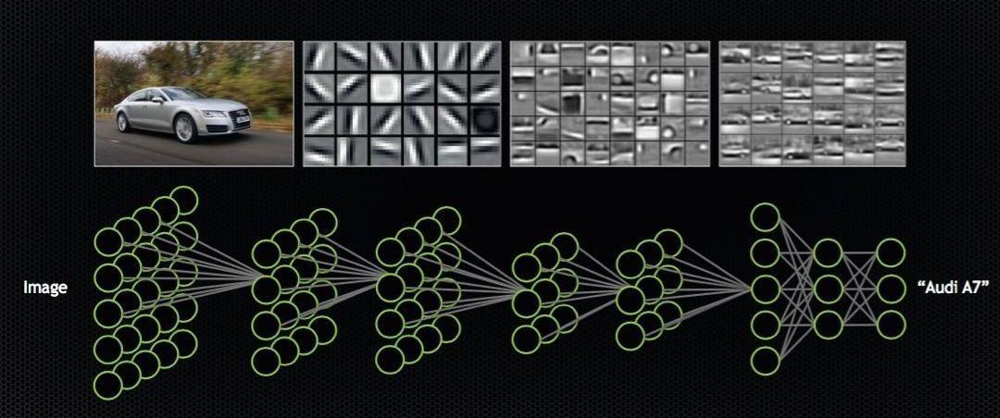

| Компонент | Описание | Примеры |
|---|---|---|
| Структура | Нейрон | Основная единица, обрабатывающая входные данные и передающая результаты другим нейронам |
| Синапс | Соединение между нейронами, определяющее силу связи между ними | |
| Слой | Группа нейронов, обычно организованных по уровням, которые выполняют определенные функции | |
| Типы | Однонаправленные | Нейронные сети, в которых данные передаются только в одном направлении, от входных к выходным |
| Рекуррентные | Сети с циклическими связями, позволяющими сохранять информацию о предыдущих состояниях | |
| Свёрточные | Специализированные для обработки данных с пространственной структурой, такими как изображения | |
| Применение | Распознавание образов | Используется для автоматического распознавания и классификации объектов и образов |
| Обработка естественного языка | Применяется для анализа, понимания и генерации текста естественного языка | |
| Прогнозирование временных рядов | Используется для прогнозирования будущих значений на основе последовательности данных | |
|  | Распознавание объектов с использованием нейронных сетей | Нейронная сеть анализирует изображение и определяет на нем автомобиль |
| Таблица о нейронных сетях с дополнительной информацией о структуре, типах и применении | ||
- Структура нейронной сети
- Нейрон
- Синапс
- Слой
- Типы нейронных сетей
- Однонаправленные
- Рекуррентные
- Свёрточные
- Применение нейронных сетей
- Распознавание образов
- Обработка естественного языка
- Прогнозирование временных рядов
Идея и ранние этапы развития нейронных сетей
Идея создания нейронных сетей возникла ещё в середине 20 века, вдохновленная работами ученых по изучению мозга и его функций. Первые концепции нейронных сетей были основаны на биологических принципах работы нейронов и сетей нервных клеток в мозге живых существ.
Одним из первых важных этапов в развитии нейронных сетей было создание модели искусственного нейрона, предложенной Уорреном Маккаллохом и Уолтером Питтсом в 1943 году. Их модель, названная "моделью Маккаллоха-Питтса", была первым шагом к созданию искусственных нейронных сетей. Этот искусственный нейрон был представлен как математическая модель биологического нейрона, способного принимать входные сигналы, обрабатывать их и выдавать выходной сигнал.
Дальнейшие исследования привели к разработке более сложных моделей и алгоритмов обучения, включая перцептрон Розенблатта в 1957 году, который стал первым примером обучаемой нейронной сети. Перцептрон имел возможность обучаться на примерах и корректировать свои веса, чтобы правильно классифицировать входные данные.
В конце 1960-х и начале 1970-х годов нейронные сети столкнулись с некоторыми ограничениями, такими как невозможность обучения сложных функций
и проблемы, связанные с "затуханием градиента" при обучении глубоких сетей. Это привело к затишью в развитии нейронных сетей, из-за чего многие исследователи обратили своё внимание на другие методы машинного обучения.
Развитие нейронных сетей в современную эпоху
После затишия в развитии нейронных сетей в конце 20 века интерес к ним возрос снова благодаря нескольким ключевым факторам. Одним из них был рост доступности данных и вычислительной мощности. С появлением интернета и цифровых технологий объем данных, доступных для обучения нейронных сетей, резко увеличился. Это позволило использовать более сложные модели и алгоритмы для решения различных задач, таких как распознавание образов, обработка естественного языка, медицинская диагностика и многое другое.
Вторым ключевым фактором был прорыв в области алгоритмов глубокого обучения, который произошел в начале 2010-х годов. Алгоритм глубокого обучения, известный как глубокое обучение на основе нейронных сетей или глубокое обучение с обратным распространением ошибки, смог решить проблему затухания градиента, что позволило эффективно обучать нейронные сети с большим количеством слоев (глубокие нейронные сети). Этот прорыв привел к бурному развитию области и применению нейронных сетей в самых разных областях.
С появлением графических процессоров (GPU), которые обладают параллельными вычислительными возможностями, обучение глубоких нейронных сетей стало более эффективным и быстрым. GPU позволяют выполнять параллельные вычисления на больших объемах данных, что идеально подходит для обработки и обучения нейронных сетей.
Важным моментом в развитии нейронных сетей было также улучшение архитектур и методов оптимизации. Сети с различными архитектурами, такими как сверточные нейронные сети (CNN) для обработки изображений и рекуррентные нейронные сети (RNN) для работы с последовательными данными, стали стандартом в обработке различных типов данных.
Кроме того, появились новые методы оптимизации, такие как стохастический градиентный спуск с моментом (SGD with momentum), адам (Adam) и другие, которые помогли ускорить и улучшить процесс обучения нейронных сетей, сделав его более стабильным и эффективным.
Таким образом, современное развитие нейронных сетей отличается от их ранних этапов значительными прорывами в области алгоритмов, архитектур и вычислительных ресурсов, что привело к широкому применению этой технологии в самых разных областях науки и промышленности.
Перспективы и вызовы в эволюции нейронных сетей
Сегодня нейронные сети играют ключевую роль в современной технологической революции, привнося новые возможности в области искусственного интеллекта, анализа данных и автоматизации процессов. Однако перед этой технологией стоят и вызовы и перспективы.
Одним из вызовов является обеспечение безопасности и надежности нейронных сетей. С увеличением их сложности и применения в критических областях, таких как медицина и автономные транспортные средства, важно обеспечить защиту от атак, ошибок и сбоев.
Другим вызовом является интерпретируемость нейронных сетей. Понимание того, как и почему нейронные сети принимают определенные решения, особенно в случае сложных моделей глубокого обучения, остается активной областью исследований.
С развитием технологий и исследований, мы можем ожидать дальнейшего развития нейронных сетей в будущем. Это включает в себя создание более эффективных алгоритмов обучения, разработку новых архитектур сетей, а также интеграцию нейронных сетей с другими технологиями, такими как квантовые вычисления и бионика.
В целом, эволюция нейронных сетей продолжает вести нас к новым горизонтам в области искусственного интеллекта и обработки информации. Сохранение баланса между инновациями и этическими вопросами, а также продолжение исследований в области безопасности и интерпретируемости, будет важным фактором в обеспечении устойчивого и продуктивного развития этой захватывающей области технологии.